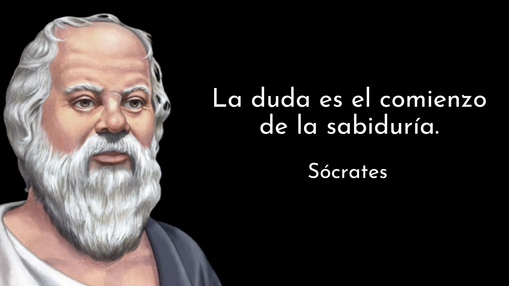

Socrates
Sócrates fue un filósofo griego que vivió en el siglo V a.C. Es conocido por ser uno de los fundadores de la filosofía occidental y el primero de los tres principales representantes de la filosofía griega, junto a Platón y Aristóteles. Fue maestro de Platón y es famoso por su método de enseñanza, conocido como la mayéutica o “método socrático”, que guiaba la búsqueda de la verdad y el conocimiento.Sócrates nació en Atenas en el año 470 a.C. Hijo de un cantero (Sofronisco) y una matrona (Fenáreta), durante su infancia recibió una educación griega tradicional en literatura, música y gimnasia. Antes de dedicarse por completo a la filosofía, trabajó como albañil y escultor junto a su padre e incluso sirvió como hoplita contra Esparta durante la guerra del Peloponeso

Su filosofia
La filosofía de Sócrates se centraba en la búsqueda del conocimiento verdadero. Utilizaba el diálogo y el pensamiento crítico como herramientas importantes para alcanzar este objetivo. Creía que para conocer la verdad, uno debe preguntar y examinar las ideas a fondo.Sócrates se propuso refutar a los sofistas a través de la búsqueda de conceptos universales, inmutables e iguales para todos, como la virtud, lo bueno y lo justo. Afirmaba que estos conceptos universales están en el alma humana donde residen el pensamiento y los valores morales y los captamos a través de la razón
Como impacta nuestra vida
La filosofía de Sócrates sigue teniendo un impacto significativo en el pensamiento contemporáneo. Sus ideas y enfoques han servido de base para numerosas ramas de la filosofía y la ciencia. Su legado perdura como un recordatorio de la importancia de la observación, el razonamiento lógico y la búsqueda constante de conocimiento.Sócrates es reconocido como el fundador de la filosofía como saber científico y racional. Sus aportaciones a la física y su rechazo a las narraciones mitológicas para explicar los fenómenos naturales han influido en la forma en que entendemos el mundo.
Además, su pensamiento ha influido en el desarrollo de la teología al cuestionar la tradición mitológica y establecer el carácter racional de lo divino. Aunque no negó la divinidad de los dioses, introdujo una nueva forma de entender lo divino desde un punto de vista racional
